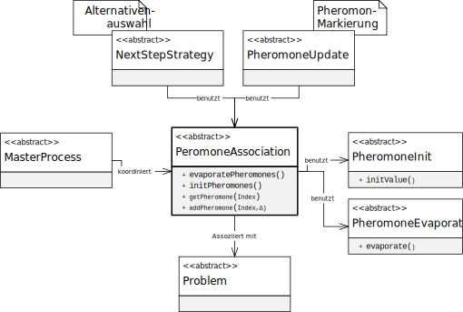

类 PheromoneOnSubsetPairs
java.lang.Object
eu.andredick.aco.pheromoneassociation.AbstractPheromoneAssociation<SCProblem>
eu.andredick.aco.pheromoneassociation.PheromoneOnSubsetPairs
信息素关联成分的表达j, 与 SCP 子集对的关联 (
与 SCP 子集对的关联
在这种形式中，信息素与SCP（问题的实体）的子集对相关联。
SCP的一对子集可以用信息素标记，
如果两个子集都包含在蚂蚁的构造解中。
与特定问题实体相关的信息素可以作为一个层，
此处设计了一些规则，包括信息素蒸发和信息素初始化。
信息素关联将信息素浓度分配给特定问题的实体。
因此，信息素关联的每种实现都对应到问题的特定实现。
这种依赖关系由泛型编程确定
因此，有必要确定信息素关联的具体问题。
以下组件需要信息素关联：
SCProblem).与 SCP 子集对的关联
在这种形式中，信息素与SCP（问题的实体）的子集对相关联。
SCP的一对子集可以用信息素标记，
如果两个子集都包含在蚂蚁的构造解中。
与特定问题实体相关的信息素可以作为一个层，
此处设计了一些规则，包括信息素蒸发和信息素初始化。
信息素关联将信息素浓度分配给特定问题的实体。
因此，信息素关联的每种实现都对应到问题的特定实现。
这种依赖关系由泛型编程确定
<P extends AbstractProblem> 实现。因此，有必要确定信息素关联的具体问题。
以下组件需要信息素关联：
- 主进程
AbstractMasterProcess - 信息素初始化
AbstractPheromoneInit - 信息素蒸发
AbstractPheromoneEvaporation - 候选方案的选择
AbstractNextStepStrategy - 信息素标记
AbstractPheromoneUpdate

-
字段概要
字段修饰符和类型字段说明private float[][]由二维对称阵列（矩阵）表示的SCP子集对上的信息素浓度.
数组的索引 i， j 对应于 SCP 的两个子集的索引（唯一映射）.从类继承的字段 eu.andredick.aco.pheromoneassociation.AbstractPheromoneAssociation
evaporationRule, pheromoneInitRule, problem -
构造器概要
构造器 -
方法概要
修饰符和类型方法说明voidaddPheromone(int j, float ph_delta) 此方法是继承的，但不能使用，因为索引仅作为输入传递给子集。voidaddPheromone(int i, int j, float ph_delta) 通过添加新的信息素来添加额外的信息素。void启动整个信息素蒸发的时间步长.
所有信息素浓度均符合蒸发规则AbstractPheromoneAssociation.evaporationRule。floatgetPheromone(int j) 始终提供 0.floatgetPheromone(int i, int j) 提供与 SCP 问题的子集对 （i，j） 相关的信息素浓度void使用起始规则启动 SCP 所有子集的信息素浓度AbstractPheromoneAssociation.pheromoneInitRule。从类继承的方法 eu.andredick.aco.pheromoneassociation.AbstractPheromoneAssociation
setEvaporationRule, setPheromoneInitRule
-
字段详细资料
-
pheromoneValues
由二维对称阵列（矩阵）表示的SCP子集对上的信息素浓度.
数组的索引 i， j 对应于 SCP 的两个子集的索引（唯一映射）.
-
-
构造器详细资料
-
PheromoneOnSubsetPairs
构造函数- 参数:
problem- 集合覆盖问题的实例
-
-
方法详细资料
-
evaporatePheromones
-
initPheromones
使用起始规则启动 SCP 所有子集的信息素浓度AbstractPheromoneAssociation.pheromoneInitRule。
此方法建立整个信息素的初始状态，该状态在 ACO 算法启动时应存在. -
getPheromone
始终提供 0. 此方法是继承的，但不能使用，因为只能传递一个参数. 两个索引 i，j 需要两个参数- 指定者:
getPheromone在类中AbstractPheromoneAssociation<SCProblem>- 参数:
j- 问题实体的索引- 返回:
- 0, 独立于输入
-
getPheromone
提供与 SCP 问题的子集对 （i，j） 相关的信息素浓度- 参数:
i- 对的第一个子集的索引j- 对的第二个子集的索引- 返回:
- 与子集对（i，j）相关的信息素浓度
-
addPheromone
此方法是继承的，但不能使用，因为索引仅作为输入传递给子集。
无论输入如何，信息素关联的状态都没有变化。- 指定者:
addPheromone在类中AbstractPheromoneAssociation<SCProblem>- 参数:
j- 问题实体的索引.ph_delta- 增加信息素浓度
-
addPheromone
通过添加新的信息素来添加额外的信息素。
该方法以成分信息素标记的形式使用 (AbstractPheromoneUpdate) 使用.
相关的信息素浓度由 SCProblem 的子集对（i，j）的指数决定.- 参数:
i- 对的第一个子集的索引j- 对的第二个子集的索引ph_delta- 信息素浓度增量
-